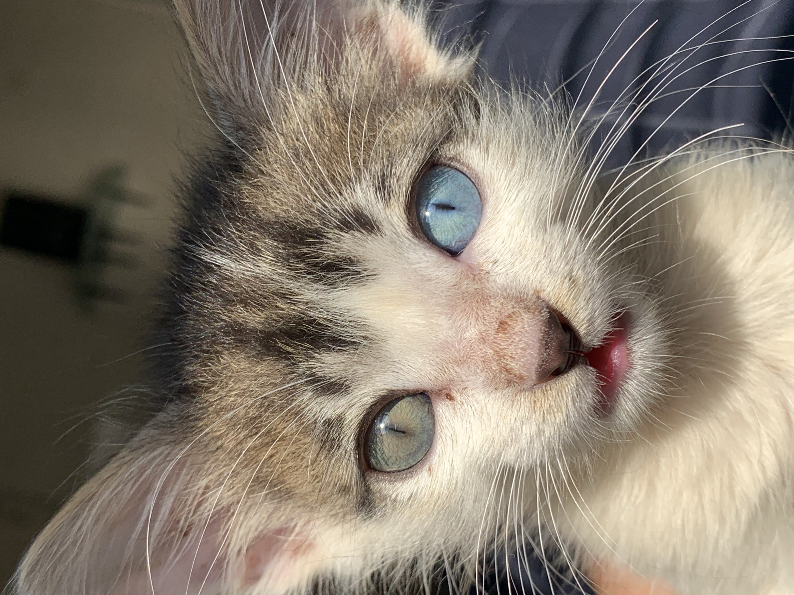
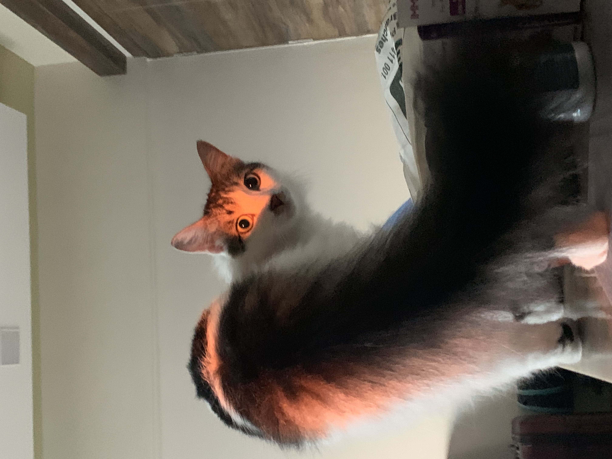
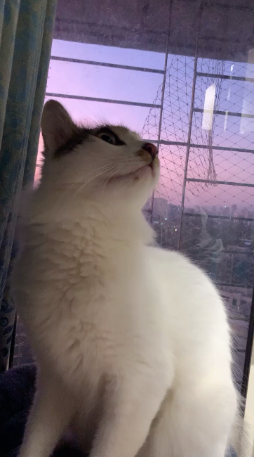
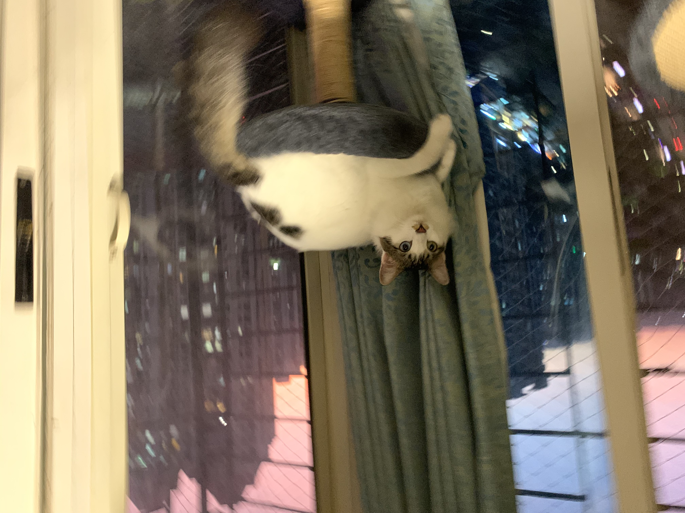

Welcome to the truth about the goblin of bavdhan. You must either be aware of the urban legend of the goblin of bavdhan, or you must have clicked here because you couldn't resist the mysterious link.
I am about to EXPOSE the truth about the elusive Goblin of Bavdhan using the following pictures!!
Born in a cruel and unjust world, in the tiny country of Kothrud a little
babe desparately searching for wartmth and love, ended up in the care of
some well-meaning human beings. These humans took care of the babe, fed it, and
nurtured it. Little did they know that this baby was actually a power level 1,000,000 XP
OVER POWERED BEAST!!!!
However, realising what they had signed up for, they put out a poster, the
first ever mention of the GOBLIN CREATURE, however it was
named as Draco, named after the fabled dark wizard of the
olden times.
Seen here sleeping like an angel, one would be easily fooled into thinking
that this creature could do no harm... However one would be
WRONG!!!
Remember how we wrote that the babe was born with 1,000,000 XP? Well, at 10
weeks old as seen here in this picture, his power level had increased to
10,000,000 XP!!
The baby goblin found his way into the country of Bavdhan in search of food
and shelter. He had heard that the country of Bavdhan was a rich and fertile
land, which indicated an abundance of prey to him.
He quickly form lair of his own, that the local population named "Sha'gn
N'isrg" which in their language meant "The belly of the beast".
As time went by, the Goblin soon found a cult following in the fearful locale of Bavdhan. Soon he recruited two young devoted human followers as his trusted retainers. These two followers were feared as well, for they had earned the Goblin's favours. They were called "Che ley" in the local tongue. They provided the Goblin much required nurturing for him to assume his full power.
As ancient folklore goes, the true powers of the Goblin are his formidable senses. One of his strongest senses is his hearing, and as you can see in this terrifying picture, the baby goblin's ears have begun to grow.
 Across the whole entire country of Bavdhan, and even it's neighbouring
countries of Kothrud, and Pashan, and as far as Model colony, the news of the
Goblin Creature of Bavdhan brought terror with it. But this also created
excitement in the adventurers who believed they could ø
capture this formidable
foe and win hearts and riches. However, they were sorely mistaken. One of the
adventurers who had a highly sophiticated magical ability to produce physical
copies of the scenery he viewed, ventured into Sha'gn Ni'srg. He was never
seen again, however a picture was found a few yards outside of the lair.
This was the picture (viewer discretion advised):
HOW COULD YOU??! HOW COULD YOU BRING SUCH A CREATURE INTO EXISTENCE?!!?? WHY, LORD, WHY!!!???
Is he powering up? His magical abilities are beyond imagination!
The eyes will haunt you forever.
Realising that there is no other creature on this godforsaken earth that could come close to defeating him, our goblin master grows bolder. Here he is seen wearing his prey, the fearsome Rat Toy, an already impressive beast, as a hat after defeating him.
As his woefully misled cult grew bigger, his followers started spreading lies about the reason for existence. They called him "The Chosen One", creating posters of him being shown basking in the Light of Heaven.

The Goblin had grown bored of his lair, and wanted to venture beyond his
territory. At this point, the entire country of Bavdhan, Kothrud, Shivajinagar,
and Pipmpri Chinchwad were under his control. The citizens had accepted him as
their new God, and would pray to him and gift tributes to him in the form of
treats. But, the Goblin King was not satisfied. He took it upon himself to find
new grounds, and set forth on his voyage to the continent of Thane. The people
of Thane had no idea that their entire way of life was about to change forever.
However, having just left a life as an immortal God behind, the Goblin Kind
decided that he would keep his power level which was now
1,000,000,000,000 XP hidden. The
Goblin King quickly found a new lair, and settled in. He found the setting
tolerable. He assumed a secret identity and started a job as a singer at the
local pub. He made a humble living this way. Following are a few pictures of
him
singing at a local pub.
While the Goblin King found his new place quite tolerable, he felt like he was
missing something. He tried cleaning his apartment, and rearranging the
furniture, of which there was only the Cat Tree. This felt good to him.
However, noticing the rampant crime in the city of Kolshet, he decided he must
do something about it. The Goblin King believed in 'ACAB' which could mean one
of two things- either "All Cats Are Beautiful" or "All Cops Are Bastards".
We may never know the full truth. But he took it upon himself to don the
metaphorical cape and cowl and fight the increasing crime in his city. This was
the beginning of his new secret job- a super hero goblin. With his power level,
no criminal would be a challenge for our Goblin King. However, there was one
challenge that even he struggled with. That was the reason crime happened. He
studied hard and read many books, but he couldn't answer this question. So he
did what he did best, which is DEFEAT ALL FOES!!!!


He became a super hero and took out criminals in the city.
Is there anything more to say? Look at the sheer ENERGY radiating out of body! This form was seen when some crazy criminal took sweaty shirts and threw them in the washing machine!
Here he can be seen in his aerodynamic form
His hero days were going great, however he was a sleepy boy. As you know, most of his hero activities ran at the nightly hours when the criminal element was most active. The Goblin King, as much as he wanted to protect his city from the clutches of crime, couldn't negelct his good sleeping habits, and chose to focus on improving his sleep schedule. Sleepy King.
Such is the story of the Goblin Creature of Bavdhan. Although he now lives and works in Kolshet, he is still referred to as the Goblin Creature of Bavhdan. For even today, the citizens of Bavdhan pray to their Goblin God everyday.
Besides singing at a local pub, he also focusses on his health and fitness and works out 4 times in a week. Here he is seen doing complex core exercises.
This was the tale of the Goblin Creature, the Goblin King, Hero Goblin, call him what you will, but you cannot deny that is a Goblin. Now I bid you farewell with the last few images of this Great Creature.
